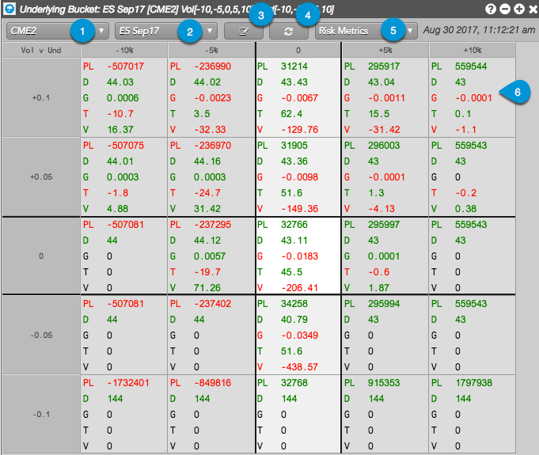
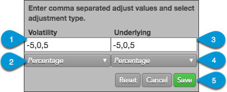

The Risk Matrix widget consists of the following:

- Account — Allows you to check your open position in a selected account (e.g., CME2).
- Product and Expiry — Allows you to select a product, underlying, or expiry in which you have an open position in the selected account. If two expiries have the same underlying instrument, you can choose to see the whole product (e.g., E-mini S&P 500), the options and futures that expire into the underlying instrument (e.g., ES Sep17), or an individual options expiry (e.g., Sep17).
- Scenario Entry — Allows you to enter a global volatility adjustment for options risk and/or a price adjustment for the underlying futures contract. You can set the volatility and underlying adjustments as a percentage or an absolute value. When the scenario of all adjustments is applied, aggregate P/L and Greeks are calculated and displayed in the matrix for the selected account and product or expiry.
- Refresh button — Updates your position in the options and underlying futures contracts, and recalculates your position and options risk based on any underlying or global volatility adjustments added to Scenario Entry.
- Risk Metrics — Selector that includes risk metrics and options Greeks. In addition to Mark to Theo, which displays theoretical P/L calculated with the theoretical options value, the following options Greeks are available: Delta, Gamma, Theta, Vega, Vega30, Vega60, Vega90, Rho, Delta Decay, Vomma, Vanna. OEV is also available if you have an expiry selected (e.g., Sep17). If you have a product or an underlying selected, it is not available.
- Matrix cell — Displays P/L for your open positions, as well as selected options risk metrics whose values are calculated based on the default scenario (-5,0,5) or custom scenario. Each cell displays values where the underlying future's price and global volatility adjustments intersect in the matrix.
Scenario Entry
The scenario entry dialog box consists of the following:

- Volatility — Allows you to determine adjustment scenarios for changes to Volatility. Your chosen intervals will be applied to your position and displayed in the left column. For example, a value of "10" in Volatility and unit of measure of "Absolute" represents a 10% increase in global volatility (the absolute value is actually a percentage when estimating changes in volatility). Negative values can also be entered to show decreases in global volatility. The adjustments can be entered in any order (e.g., -5, 0, 5, -10, 10).
- Unit of measure (Volatility) — Sets an absolute value or percentage adjustment to global volatility.
- Underlying — Allows you to determine adjustment scenarios for changes to the Underlying Instrument. Your chosen intervals will be applied to your position and displayed in the top row. For example, a scenario that includes an Underlying value of "5" and unit of measure of "Percentage" represents a 5% increase in the price of the underlying future. Negative values can also be entered to show decreases in price. The adjustments can be entered in any order (e.g., -5, 0, 5, -10, 10).
- Unit of measure (Underlying) — Sets an absolute value or percentage adjustment in the price of the underlying futures contract.
- Control buttons — The Reset button restores the previously saved adjustment values. Click Cancel or
Save to delete or save your adjustment settings.